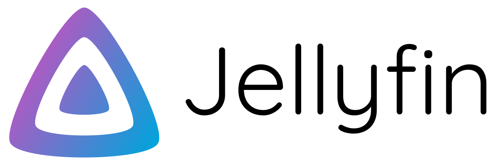

A comprehensive Network Attached Storage (NAS) solution built from the ground up using a Raspberry Pi 5,
specifically engineered for container storage and development workflows. This project demonstrates
advanced system administration, hardware integration, and infrastructure design skills.
Project Overview
This ambitious project involved building a complete NAS solution from initial concept to production deployment.
Starting with careful hardware selection and ending with a fully configured system optimized for container storage,
the Pi-NAS serves as both a development environment and a reliable storage solution for my projects.
The system demonstrates enterprise-level reliability with 24/7 uptime, automated backups, and comprehensive
monitoring - all running on efficient ARM-based hardware with minimal power consumption.
Hardware Specifications
Network
Native Gigabit Ethernet port on Pi 5 for high-speed data transfer
Software Configuration
Operating System
Debian Lite 64-bit - Optimized for minimal resource usage and maximum performance
Container Runtime
Docker with Docker Compose for orchestrated container management
File System
Btrfs for snapshots, compression, and data integrity features
Network Services
Samba, NFS, and SSH for comprehensive network access
Monitoring
Prometheus + Grafana stack for system metrics and visualization
Backup
Automated rsync scripts with encryption for data protection
Running Container Services
Jellyfin
Media server for streaming and organizing multimedia content with transcoding support
Tailscale
Secure mesh VPN for remote access and secure networking capabilities
OpenMediaVault
Web-based network attached storage solution for easy management and configuration
Container Services


Key Features & Capabilities
Container-Optimized Storage:
Configured with Docker volumes and bind mounts for seamless container data persistence and high-performance I/O.
High Availability:
RAID-like redundancy with automated backup and recovery procedures ensuring data integrity and system reliability.
Network Performance:
Optimized for gigabit speeds with low-latency access to container data and efficient network protocols.
Remote Management:
Full SSH access with web-based monitoring and management interfaces for comprehensive system control.
Energy Efficiency:
ARM-based architecture with intelligent power management for 24/7 operation with minimal power consumption.
Completed Build

The completed Pi-NAS system in its custom 3D-printed enclosure, ready for production use.
Technical Challenges & Solutions
The most challenging aspects of this project included configuring the storage subsystem for optimal performance,
setting up proper cooling management for sustained workloads, and implementing a robust backup strategy that
wouldn't impact container performance.
Key solutions involved implementing Btrfs snapshots for instant backups, configuring Docker with proper volume
management, and setting up comprehensive monitoring with Prometheus and Grafana. The system now runs 24/7
with excellent stability and performance, serving as a reliable foundation for development and storage needs.
Thermal Management
Implemented active cooling with temperature monitoring and automatic fan speed adjustment
Backup Strategy
Automated rsync with encryption, Btrfs snapshots, and offsite backup integration
Performance Tuning
Optimized I/O scheduling, memory management, and network configuration for maximum throughput